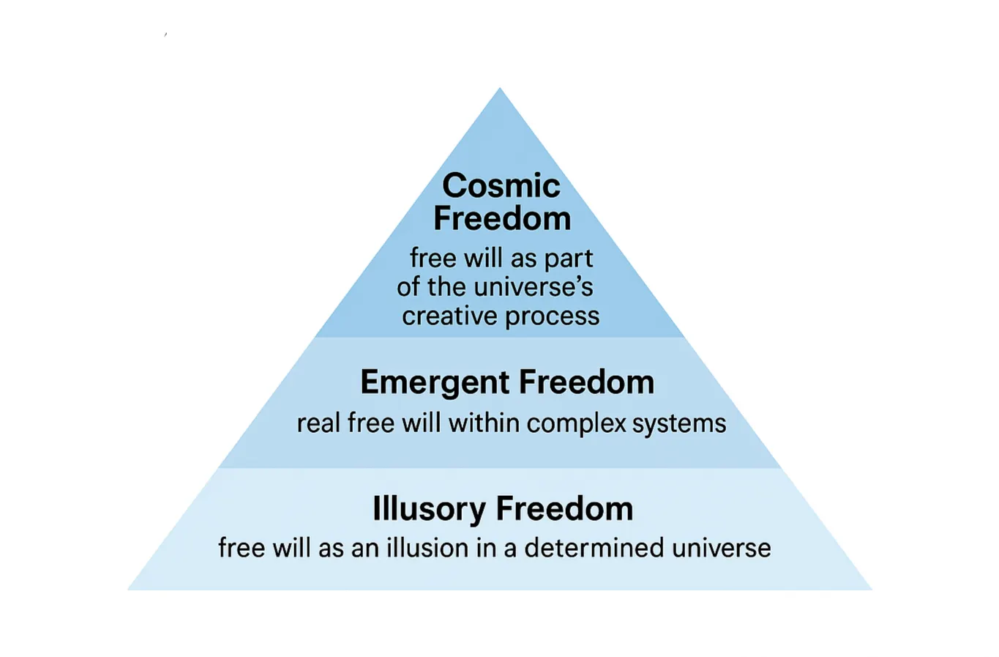

Levels of Free Will in a Cosmic Panpsychic Monism

Introduction
Free will is one of philosophy’s most enduring questions. If the universe from its creation is a unified whole, with consciousness as a fundamental aspect, what does it mean for our freedom?
This article presents a framework of three levels of free will within a cosmic panpsychic monism, based on classical and modern philosophical thought.
Background
All reality is made of the same fundamental substance. There is no absolute divide between matter and mind—everything is part of one whole. This basic substance has some form of consciousness. Even atoms or particles possess a kind of experience, giving reality an inherent inner mental aspect.
Cosmic panpsychic monism suggests that the universe itself is a living, conscious system, with individual beings arising as local expressions of it.
Within this view, the question of free will becomes more nuanced: is our freedom an illusion, an emergent property, or an expression of the cosmos’ own creativity?
The Levels of Free Will
1. Illusory Freedom (Deterministic Level)
At this level, the cosmos follows strict governed necessity. Every event, including our choices, arises from universal laws. Our sense of freedom is real in experience, but ultimately everything is determined. Freedom here comes from understanding necessity — knowing how we fit into the whole — not actual autonomy.
2. Emergent Freedom (Local Level)
Even in a unified whole, complex systems — such as brains and societies — can develop self‑organizing properties. These systems evaluate options and generate genuinely new outcomes. Reality consists of events with internal direction and self-determination. Freedom at this level is real, but contextual, and emerges from the complexity within these systems.
3. Cosmic Freedom (Ontological Level)
On this level, the universe itself is a creative, conscious process. Our choices are not isolated— they are expressions of universal creativity. Individual will is a derivative of the universe’s creative will, and nature possesses inherent creative freedom. This freedom manifests gradually through history, with human actions forming a local channel of cosmic agency.
Discussion
These three levels can coexist:
- Microscopic determinism – necessity rules fundamental processes.
- Mesoscopic emergent self-determination – genuine but context-bound freedom.
- Macroscopic cosmic creativity – individuals as expressions of universal freedom.
This view offers a richer understanding of free will: we are neither fully free nor fully bound. Our freedom is local and observable, yet part of the cosmos’ ongoing creative unfolding.
Conclusion
Cosmic panpsychic monism allows free will to exist at multiple levels:
- Illusory freedom – apparent, but illuminates necessity.
- Emergent freedom – real in complex systems.
- Cosmic freedom – reflects the universe’s creative will.
This synthesis connects classical and modern philosophy, offering a structured model for understanding free will in a conscious universe.
References
Primary sources:
- Spinoza, B. Ethics.
- Hegel, G.W.F. Philosophy of Right.
- Whitehead, A.N. Process and Reality.
- Schopenhauer, A. The World as Will and Representation.
- Schelling, F.W.J. Philosophy of Nature.
Secondary sources / introductions:
- Nicholas Rescher, Process Metaphysics.
- David Skrbina, Panpsychism in the West.